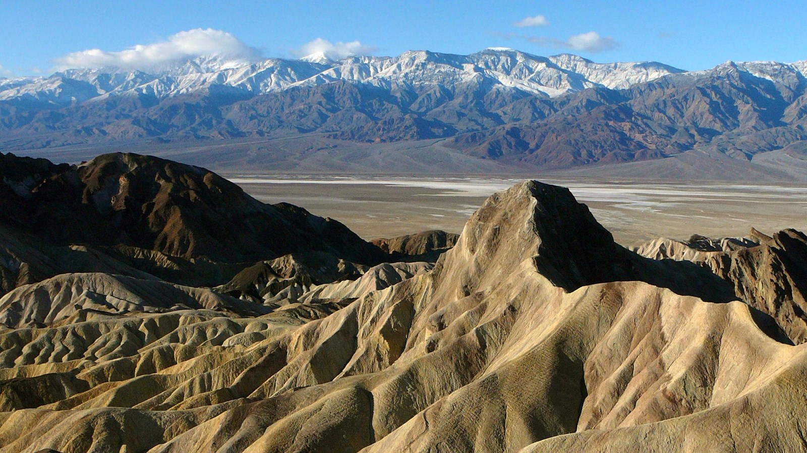

LAS VEGAS / SOUTHWEST
Desert, canyons
and rivers in changing light.
Start in Las Vegas with a Death Valley day trip, followed by a two-day Grand Canyon and Page tour. Confirm pickup, stops and departures with the booked operator.
Suggested route order
Day 1 · Las Vegas round trip
Death Valley
Dunes, salt flats and a landscape pulled apart
Open stop-by-stop guide →Day 2 · South Rim → PageGrand Canyon
From the air to the rim: a history written in rock
Open stop-by-stop guide →Day 3 · Page → Las VegasAntelope Canyon and Horseshoe Bend
Sandstone curves and the colors of the Colorado River
Open stop-by-stop guide →Allow separate travel days
These are three sightseeing days, excluding flights into and out of Las Vegas. The two-day canyon tour must match its departure schedule. Avoid an essential late flight on the return evening.